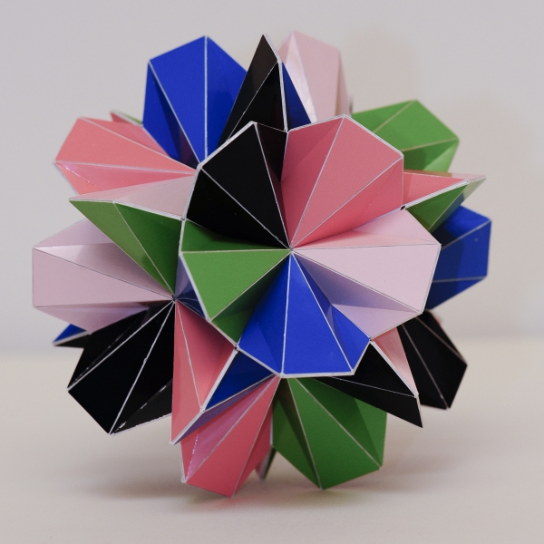

The Moonflower

Picture copyright by PhotoArt Studio Hörby
This model was built in 2012 and its dimensions is around 13 cm x 13 cm x 13 cm.
This polyhedron only consists of regular heptagons that are folded over a diagonal. There are different ways in which you can fold a regular heptagon and for this polyhedron the folding is done in a 'W' shape.
The polyhedron has the same symmetry as an icosahedron. Because of that you can find the golden ratio back in it. It is well known that the golden ratio can also be found in the sunflower. This polyhedron consists of heptagons. The ratios of the diagonals and the edges follow a similar pattern as the golden ratio, though not exactly the same. For this reason I refer to this model as the moonflower. Well, the polyhedon also reminds me a bit of a flower.
Last Updated
2019-10-11